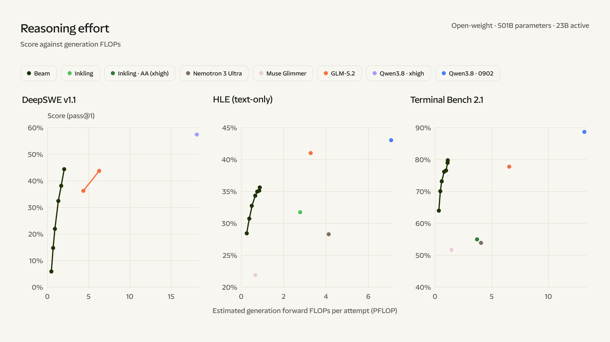

Executive Summary
This article reads Beam, announced by Reflection AI on October 5, 2026. It is the company's first open-weight model, and it is built for coding and tool use. The weights go out under the Apache 2.0 licence sometime in October, which means anyone can download the model, run it and change it. How far that "anyone" actually reaches is the question.
Reflection wrote at some length about how it chose the pretraining data. Roughly 95 per cent of raw Internet tokens were thrown away, and around 1.8 trillion tokens that a conventional filter would have discarded were kept instead. Move from how the data was selected to where it came from, and the account stops at three categories: the web, public sources, and proprietary licensed datasets. The datasets and the training pipeline are not on the October release list either. The company said a year ago that it would hold those back, and this release does what it said.
Sections 1 through 3 are facts from Reflection's announcement and the text of the EU AI Act. Sections 4 and 5 are this article's reading of those facts through the eyes of the people who bring an open model into a company.
Key Numbers
Four numbers come out of the announcement. The first two are the size of the model and the size of its training data. The last two are how that data was handled and what the release list contains.
Source: Reflection AI, "Introducing Beam" (2026-10-05).
501B
Beam's total parameters
Only 23 billion of them do the work on any one token
23.8T
Tokens used in pretraining
Their origin is given as three categories: the web, public sources, licensed datasets
95%
Raw Internet tokens filtered out
The rule that decided what stayed and what went is itself unpublished
0
Training datasets on the release list
Weights, technical report, model card and developer tooling are on it; datasets are not
What Beam Opens in October, and What It Does Not
Reflection AI is an American company whose funding round was led by Nvidia. When it raised two billion dollars in October 2025, the goal it stated was to put frontier AI within reach of anyone who wants to run it, and the coverage at the time called the company an American DeepSeek. Beam is the first thing to come out of that promise. Its mixture-of-experts design holds 501 billion parameters in total while waking only 23 billion of them for any single token. It takes a context of up to a million tokens.
The scale of the hardware that went into training is in the announcement as well. Pretraining ran on a cluster of 6,144 Nvidia GB300 chips in under four weeks, and the reinforcement learning that followed used 10,500 GB300 chips over four weeks. The model made more than a hundred million attempts during that stage, with a maximum context length of 256,000 tokens. Where the money and the electricity went is written down in numbers.
The scorecard came with it. On SWE-Bench Verified, which measures whether a model can repair real code, Beam scored 80.9, against 77.6 for Inkling and 70.7 for Nemotron 3 Ultra in the same table. On Terminal-Bench v2.1, which watches whether a model can carry a terminal task through to the end, it scored 80.1, a little under the 81.0 posted by Z.ai's GLM-5.2. The sentence Reflection put at the front is not about rank but about efficiency: the claim is that Beam matches GLM-5.2 on hard reasoning work while spending three to four times less inference compute.

That comparison carries a caveat the company attached itself. It leaves out prompt prefill, the attention operations that vary with context, and serving overhead, which makes it an approximate compute comparison rather than a measured inference cost. The benchmark figures are Reflection's own runs as well. Outside verification only becomes possible once the weights are actually out.
So the question becomes what actually lands in your hands in October. The announcement names the weights, a technical report, a model card and developer tooling, and adds that the full stack for running, evaluating and fine-tuning the model will come with documentation. The licence is Apache 2.0.
One item on the list is of a different kind. Reflection says it will open-source the safety evaluations it built and used internally, and it gives a reason: to create a shared, inspectable standard that the open ecosystem can test against and contribute to. The results of those evaluations go into the technical report. This promise to put the measuring instruments in other people's hands does not extend to the training data.
Two things are absent from the list. The datasets used for training, and the pipeline that produced them. Neither is promised, and neither is ruled out. They are simply not there. The basis for reading that silence appeared a year ago: when the two billion dollar round closed in October 2025, co-founder Misha Laskin said the weights would be published while the datasets and the full training pipeline stayed proprietary. This release is not a change of that policy but an execution of it.
▲ Original Pebblous diagram — what Reflection AI named for release in its announcement of October 5, 2026, and what did not make that list. Source: Reflection AI, "Introducing Beam" (2026-10-05).
Which Part of the 23.8 Trillion Tokens Is on the Record?
Saying that Reflection kept quiet about its training data would be wrong. There is a long passage on how that data was handled. The team trained its own quality classifiers for web documents, for code and for scientific and mathematical text, sorted each into tiers, and then weighted the better tiers during training. About 95 per cent of raw Internet tokens went out through parsing, deduplication and curation. In the other direction, the team reckoned that conventional techniques would have missed roughly 1.8 trillion high-quality tokens, and kept them. Inside that figure sits 87 per cent of their curated web-code tokens.
All of that is an account of method. How the data was filtered is on the record. Ask where it came from and the sentences shorten abruptly. On origin there is one line: 23.8 trillion diverse high-quality tokens from the web, public sources and proprietary licensed datasets. Code gets a second line, which says the model trains on nearly all publicly accessible, permissively licensed code and code documentation on the web.
Write out the questions those two lines cannot answer and the shape of the gap appears. Which web domains were crawled. Who sold the proprietary licensed datasets, and on what terms. What share of the 23.8 trillion each of the three categories holds. Which list of licences counts as permissive. How they screened out content whose rights holders had opted out of training. None of these has an answer. The 95 per cent figure says how much was thrown away; it says nothing about the rule that decided what stayed and what went.
The gap does not end with pretraining. The four weeks of reinforcement learning that lifted Beam's scores ran across roughly a million environments spanning software engineering, terminal work, competitive programming, science and maths, web search and tool use. Their origin gets one line as well: they were built primarily through synthetic data pipelines, supplemented by proprietary vendor data and open-source sources. Which vendors supplied what, which model stamped out the synthetic data and what seeded it, are not written down.
2.1"Open-Weight" and "Open-Source" Are Not the Same Word
This distinction is not about Beam in particular. Publishing the finished parameters alone is called open-weight; publishing the process that produced those parameters as well is called open-source. The Open Source AI Definition asks for the provenance, selection and filtering of the training data to be documented well enough that a skilled person could build a substantially equivalent dataset again. Measured against that, releasing the weights covers part of the requirement.
A real case makes the distance between the two easy to see. OLMo 3, released by the Allen Institute for AI in November 2025, came with its pretraining dataset Dolma 3 as well as its weights. That is roughly six trillion tokens, published alongside documentation of the data mix, the training code, and the intermediate checkpoints saved along the way. With the data, the code and the checkpoints all in hand, it becomes possible to trace a sentence the model produced back to the training documents behind it. What Beam releases does not support that tracing.

| Scope of release | What the recipient can do | What stays out of reach |
|---|---|---|
| Weights only (Beam) | Download and run on in-house servers, fine-tune, evaluate outputs, redistribute | Rebuilding the training material, auditing it for copyright or personal data, reproducing the training run |
| Weights + data + code (OLMo 3) | Everything on the left, plus inspecting the data mix, reproducing training, tracing an output back to the training material | Being released from the original copyright terms attached to individual documents inside the dataset |
▲ How far the recipient's powers extend according to the scope of the release. Source: Reflection AI, "Introducing Beam" (2026-10-05); Ai2, "Olmo 3" (2025-11-20).
This table is not here to run Beam down. A 501-billion-parameter model under Apache 2.0 is rare in itself, and the freedom the recipient gains is not small. The trouble is that one phrase, "open model", is currently used for both rows, so which row you have been handed is something you have to establish for yourself.
Europe Already Put the Summary Into Law
Asking providers to disclose the sources of their training data is not an industry wish; it already exists as statutory text. Article 53(1)(d) of the EU AI Act requires providers of general-purpose AI models to publish a sufficiently detailed summary of the content used for training, following a template supplied by the European AI Office. The template was published on July 24, 2025, and the obligation has applied since August 2, 2025. Models already on the market before that date have until August 2, 2027, and enforcement against breaches becomes possible from August 2, 2026.
What the template asks for lines up almost exactly with the boxes Beam's announcement leaves empty. General information about the provider and the model, a list of the main data sources sorted by category, and a section on processing and governance. The source list has to name categories such as public datasets, licensed datasets, crawled material, user data and synthetic data, each with an approximate size. How reservations of rights expressed by rights holders were respected belongs in the explanatory section too.
One common assumption goes badly wrong here: the idea that releasing under an open licence lifts the duty. Article 53(2) does grant an exemption to models distributed under a free and open-source licence. The exemption covers points (a) and (b) of paragraph 1 — drawing up technical documentation, and providing information to downstream providers — and nothing more. Point (c), which requires a copyright compliance policy, and point (d), which requires the public summary of training content, are not on the exempted list. On top of that, the exemption does not apply at all to general-purpose AI models with systemic risk.
▲ The exemption in Article 53(2) reaches points (a) and (b) only, and models with systemic risk fall outside it altogether. Source: Regulation (EU) 2024/1689, Article 53.
So whenever Beam enters the European market, that three-category account of its sources has to be written out again on a template. Reflection has not said when or in what form it will offer the model in Europe, so there is no basis for saying the company is in breach of anything today. What is clear is that an open licence is not a shield. Nor is the law after a complete inventory of the data. It leaves room for trade secrets while asking for enough detail that a party holding rights can find out whether its content was used and act on the answer.
The Questions That Come Back Once the Model Is Inside
Deciding to bring an open-weight model in-house usually ends after two checks. The licence is Apache 2.0, so commercial use is fine, and the benchmark scores are good enough. Then the model goes into a product and the character of the questions changes. A customer's security review arrives, a public procurement review follows, and sometimes a regulator writes. None of what gets asked there is about scores.
What was this model trained on. Could copyrighted material from our industry have gone into it. How was the possibility of personal data getting mixed in ruled out. A team holding only the weights cannot answer any of that in its own words. It can only repeat the explanation given by the company that built the model, and when that explanation stops at three categories, what can be repeated stops there too.
The Apache 2.0 licence does not fill the gap either. It is a document that grants the right to use, modify and redistribute an artefact called the weights. It is not a document that warrants anything about the rights attached to the data used to produce that artefact. The two sit on different layers. Holding the right to use something and knowing its history do not overlap.
That is reason enough to add one more item to the checklist used when an open model is assessed. Next to the licence type and the benchmark scores, a box for whether a summary of the training data has been published and, if so, how far down it goes. No new standard is needed. The items the European template asks for can be lifted straight across.
- • Has a summary of the training data been published? Without one, everything we can tell an outsider about the model's history is a quotation from the supplier's announcement
- • If a summary exists, are the sources broken out by category with a size against each? An account that describes method and leaves origin blank does not fill this box
- • If we have to close that gap ourselves, who writes what down? Where the party adopting the model ends up producing the risk documentation, that labour belongs in the cost of adoption
Why Pebblous Is Watching This Announcement
There is a premise Pebblous repeats whenever it talks about AI-Ready Data. The quality of data cannot be judged by looking at the data alone; the judgement becomes possible only when a record of where it came from and how it was worked on travels with it. Beam's announcement is one of those cases, seen from the model side. There are plenty of numbers in it. Parameters, tokens, GPU counts, benchmark scores, all present. The one thing missing is where the data came from.
Seen from the side that uses the model, this is a supply chain problem. No manufacturer buys a component without asking which factory it came from. Models, though, are still routinely brought in on the strength of a performance table. Performance can be swapped out for a better model later; the rights questions that come from the training data stay behind after the swap. The two do not age at the same speed.
Opening the weights is plainly a step in the right direction. If Beam does arrive in October, there will be one more frontier-class open model available outside China, and organisations that have to keep a model on their own servers will have another option. What this article is pointing at is not the direction of the step but its width. The industry has not settled what "open" covers, and the law has started filling that space first.
Thank you for reading this far. Every figure and quotation here was checked against Reflection AI's Beam announcement and the text of Article 53 of the EU AI Act. If your team checks a particular box about training data before it brings an open model in, we would be glad to hear which one.
References
- 1.Reflection AI. (2026). "Introducing Beam." Reflection AI Blog, Oct. 5, 2026.
- 2.Ai2 (Allen Institute for AI). (2025). "Olmo 3." Ai2 Blog, Nov. 20, 2025.
- 3.European Union. "Regulation (EU) 2024/1689 (Artificial Intelligence Act), Article 53." Official Journal of the European Union, Jul. 12, 2024.